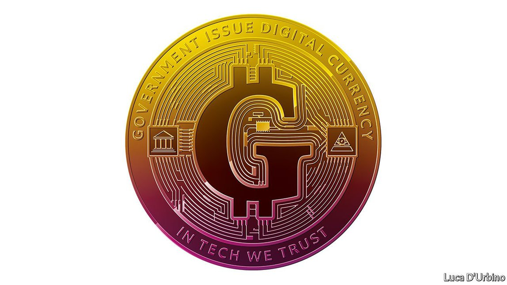

Text
2021-05-18T14:56:55+00:00
The rise of e-money
电子货币兴起
電子貨幣興起
The digital currencies that matter
重量级数字货币
重量級數字貨幣
Get ready for Fedcoin and the e-euro
准备迎接美联储币和电子欧元吧
準備迎接美聯儲幣和電子歐元吧
TECHNOLOGICAL CHANGE is upending finance. Bitcoin has gone from being an obsession of anarchists to a $1trn asset class that many fund managers insist belongs in any balanced portfolio. Swarms of digital day-traders have become a force on Wall Street. PayPal has 392m users, a sign that America is catching up with China’s digital-payments giants. Yet the least noticed disruption on the frontier between technology and finance may end up as the most revolutionary: the creation of government digital currencies, which typically aim to let people deposit funds directly with a central bank, bypassing conventional lenders.
技术变革正在颠覆金融业。让无政府主义者意乱情迷的比特币已经成为一个价值万亿美元的资产类别，许多基金经理坚称任何均衡的投资组合都应包含比特币。大批用数字化方式交易的短线投资者已成为冲击华尔街的力量。PayPal拥有3.92亿用户，显示美国正在赶上中国的数字支付巨头。然而，在科技和金融之间的前沿地带，最不起眼的颠覆却有可能带来最具革命性的变化：创建政府数字货币。一般来说，发行这种货币是为了让人们绕过传统的贷款机构，将资金直接存入央行。
技術變革正在顛覆金融業。讓無政府主義者意亂情迷的比特幣已經成為一個價值萬億美元的資產類別，許多基金經理堅稱任何均衡的投資組合都應包含比特幣。大批用數字化方式交易的短線投資者已成為衝擊華爾街的力量。PayPal擁有3.92億用戶，顯示美國正在趕上中國的數字支付巨頭。然而，在科技和金融之間的前沿地帶，最不起眼的顛覆卻有可能帶來最具革命性的變化：創建政府數字貨幣。一般來說，發行這種貨幣是為了讓人們繞過傳統的貸款機構，將資金直接存入央行。
These “govcoins” are a new incarnation of money. They promise to make finance work better but also to shift power from individuals to the state, alter geopolitics and change how capital is allocated. They are to be treated with optimism, and humility.
这些“政府币”是货币的新形态。它们有望改进金融业的运作，同时还可能将权力从个人转移到政府手中，改变地缘政治，并且改变资本的配置方式。理应以乐观和谦逊的态度面对它们。
這些“政府幣”是貨幣的新形態。它們有望改進金融業的運作，同時還可能將權力從個人轉移到政府手中，改變地緣政治，並且改變資本的配置方式。理應以樂觀和謙遜的態度面對它們。
A decade or so ago, amid the wreckage of Lehman Brothers, Paul Volcker, a former head of the Federal Reserve, grumbled that banking’s last useful innovation was the ATM. Since the crisis, the industry has raised its game. Banks have modernised their creaking IT systems. Entrepreneurs have built an experimental world of “decentralised finance”, of which bitcoin is the most famous part and which contains a riot of tokens, databases and conduits that interact to varying degrees with traditional finance. Meanwhile, financial “platform” firms now have over 3bn customers who use e-wallets and payments apps. Alongside PayPal are other specialists such as Ant Group, Grab and Mercado Pago, established firms such as Visa, and Silicon Valley wannabes such as Facebook.
大约十年前，在雷曼兄弟破产后的一片狼藉之中，美联储前主席保罗·沃尔克（Paul Volcker）不满地指出，在ATM机之后，银行业就再没有诞生过什么有用的创新了。金融危机以来，银行业已经大大提升了自身的运作。银行对自己陈旧的IT系统进行了现代化改造。创业者们建立起了一个“去中心化金融”的试验田，其中最著名的就是比特币，同时也包含了各式各样的代币、数据库和通道，它们在不同程度上与传统金融对接互动。与此同时，金融“平台”公司已拥有超过30亿使用电子钱包和支付应用的客户。这些公司除了PayPal，还有蚂蚁集团、Grab和Mercado Pago这类专业公司、Visa这样的老牌企业，以及Facebook等来自硅谷的模仿者。
大約十年前，在雷曼兄弟破產後的一片狼藉之中，美聯儲前主席保羅·沃爾克（Paul Volcker）不滿地指出，在ATM機之後，銀行業就再沒有誕生過什麼有用的創新了。金融危機以來，銀行業已經大大提升了自身的運作。銀行對自己陳舊的IT系統進行了現代化改造。創業者們建立起了一個“去中心化金融”的試驗田，其中最著名的就是比特幣，同時也包含了各式各樣的代幣、數據庫和通道，它們在不同程度上與傳統金融對接互動。與此同時，金融“平台”公司已擁有超過30億使用電子錢包和支付應用的客戶。這些公司除了PayPal，還有螞蟻集團、Grab和Mercado Pago這類專業公司、Visa這樣的老牌企業，以及Facebook等來自硅谷的模仿者。
Government or central-bank digital currencies are the next step but they come with a twist, because they would centralise power in the state rather than spread it through networks or give it to private monopolies. The idea behind them is simple. Instead of holding an account with a retail bank, you would do so direct with a central bank through an interface resembling apps such as Alipay or Venmo. Rather than writing cheques or paying online with a card, you could use the central bank’s cheap plumbing. And your money would be guaranteed by the full faith of the state, not a fallible bank. Want to buy a pizza or help a broke sibling? No need to deal with Citigroup’s call centre or pay Mastercard’s fees: the Bank of England and the Fed are at your service.
接下来就是由政府或央行发行的数字货币了。但这里发生了一种转折，因为这些货币会将权力集中在政府手里，而不是通过网络分散出去或是交给私营垄断机构。它们背后的逻辑很简单。你无需在零售银行开户，而是通过一个类似支付宝或Venmo等应用的界面直接在央行开户。你不再需要使用支票或在网上刷卡支付，而是可以利用央行的低成本通道。你的资金将完全由国家信用担保，而不用交给一家可能并不可靠的银行。想买个披萨或者借钱给周转不灵的兄弟姐妹？不需要和花旗银行的呼叫中心打交道，也不需要支付万事达卡的手续费：英国央行和美联储随时为您效劳。
接下來就是由政府或央行發行的數字貨幣了。但這裡發生了一種轉折，因為這些貨幣會將權力集中在政府手裡，而不是通過網絡分散出去或是交給私營壟斷機構。它們背後的邏輯很簡單。你無需在零售銀行開戶，而是通過一個類似支付寶或Venmo等應用的界面直接在央行開戶。你不再需要使用支票或在網上刷卡支付，而是可以利用央行的低成本通道。你的資金將完全由國家信用擔保，而不用交給一家可能並不可靠的銀行。想買個披薩或者借錢給周轉不靈的兄弟姐妹？不需要和花旗銀行的呼叫中心打交道，也不需要支付萬事達卡的手續費：英國央行和美聯儲隨時為您效勞。
This metamorphosis of central banks from the aristocrats of finance to its labourers sounds far-fetched, but it is under way. Over 50 monetary authorities, representing the bulk of global GDP, are exploring digital currencies. The Bahamas has issued digital money. China has rolled out its e-yuan pilot to over 500,000 people. The EU wants a virtual euro by 2025, Britain has launched a task-force, and America, the world’s financial hegemon, is building a hypothetical e-dollar.
身为金融界贵族的央行成了雇工，这种转变听起来有点离奇，但确实正在发生。50多个国家和地区的货币管理机构正在探索数字货币，它们占了全球GDP的一大部分。巴哈马已经发行了数字货币。中国在50多万人当中试点了数字人民币。欧盟希望在2025年前推出虚拟欧元，英国已经启动了一个特别工作组，而全球金融霸主美国正在构建一种假想的电子美元。
身為金融界貴族的央行成了僱工，這種轉變聽起來有點離奇，但確實正在發生。50多個國家和地區的貨幣管理機構正在探索數字貨幣，它們佔了全球GDP的一大部分。巴哈馬已經發行了數字貨幣。中國在50多萬人當中試點了數字人民幣。歐盟希望在2025年前推出虛擬歐元，英國已經啟動了一個特別工作組，而全球金融霸主美國正在構建一種假想的電子美元。
One motivation for governments and central banks is a fear of losing control. Today central banks harness the banking system to amplify monetary policy. If payments, deposits and loans migrate from banks into privately run digital realms, central banks will struggle to manage the economic cycle and inject funds into the system during a crisis. Unsupervised private networks could become a Wild West of fraud and privacy abuses.
促使政府和央行这么做的原因之一是担心失去控制权。目前央行利用银行体系来放大货币政策的效果。如果支付、存款和贷款从银行转移到私人运营的数字领域，央行将难以管理经济周期，也难以在危机时期向银行体系注入资金。无人监管的私营网络可能会成为欺诈泛滥和侵犯隐私的“狂野西部”。
促使政府和央行這麼做的原因之一是擔心失去控制權。目前央行利用銀行體系來放大貨幣政策的效果。如果支付、存款和貸款從銀行轉移到私人運營的數字領域，央行將難以管理經濟周期，也難以在危機時期向銀行體系注入資金。無人監管的私營網絡可能會成為欺詐泛濫和侵犯隱私的“狂野西部”。
The other motivation is the promise of a better financial system. Ideally money provides a reliable store of value, a stable unit of account and an efficient means of payment. Today’s money gets mixed marks. Uninsured depositors can suffer if banks fail, bitcoin is not widely accepted and credit cards are expensive. Government e-currencies would score highly, since they are state-guaranteed and use a cheap, central payments hub.
它们的另一个动力是有望拥有更好的金融体系。在理想情况下，货币是可靠的储值工具、稳定的记账单位，也是高效的支付手段。当今的货币在这些方面的表现好坏参半。银行倒闭时，没有保险的储户可能蒙受损失，比特币尚未得到广泛接受，而信用卡又过于昂贵。政府发行的电子货币可能会有上佳表现，因为它们由政府担保，同时使用成本低廉的中央支付中心。
它們的另一個動力是有望擁有更好的金融體系。在理想情況下，貨幣是可靠的儲值工具、穩定的記賬單位，也是高效的支付手段。當今的貨幣在這些方面的表現好壞參半。銀行倒閉時，沒有保險的儲戶可能蒙受損失，比特幣尚未得到廣泛接受，而信用卡又過於昂貴。政府發行的電子貨幣可能會有上佳表現，因為它們由政府擔保，同時使用成本低廉的中央支付中心。
As a result, govcoins could cut the operating expenses of the global financial industry, which amount to over $350 a year for every person on Earth. That could make finance accessible for the 1.7bn people who lack bank accounts. Government digital currencies could also expand governments’ toolkits by letting them make instant payments to citizens and cut interest rates below zero. For ordinary users, the appeal of a free, safe, instant, universal means of payment is obvious.
政府币可以由此削减全球金融业的运营费用，这项费用相当于地球上每人每年支出超过350美元。17亿没有银行账户的人也可以因此获得金融服务。政府数字货币还可以扩大政府的工具包，可以向公民即时发钱，还可以将利率降至零以下。对于一般用户来说，一种免费、安全、即时、通用的支付方式的吸引力是显而易见的。
政府幣可以由此削減全球金融業的運營費用，這項費用相當於地球上每人每年支出超過350美元。17億沒有銀行賬戶的人也可以因此獲得金融服務。政府數字貨幣還可以擴大政府的工具包，可以向公民即時發錢，還可以將利率降至零以下。對於一般用戶來說，一種免費、安全、即時、通用的支付方式的吸引力是顯而易見的。
It is this appeal, though, that creates dangers. Unconstrained, govcoins could fast become a dominant force in finance, particularly if network effects made it hard for people to opt out. They could destabilise banks, because if most people and firms stashed their cash at the central banks, lenders would have to find other sources of funding with which to back their loans.
不过，也正是这种吸引力会酝酿风险。如果不受约束，政府币可能很快就会成为金融领域的主导力量；尤其是如果网络效应让人们不用它都不行，就更是如此。银行的根基将被动摇，因为如果大多数人和公司都把现金存放在央行，银行就得为其贷款寻找新的资金来源。
不過，也正是這種吸引力會醞釀風險。如果不受約束，政府幣可能很快就會成為金融領域的主導力量；尤其是如果網絡效應讓人們不用它都不行，就更是如此。銀行的根基將被動搖，因為如果大多數人和公司都把現金存放在央行，銀行就得為其貸款尋找新的資金來源。
If retail banks were sucked dry of funding, someone else would have to do the lending that fuels business creation. This raises the queasy prospect of bureaucrats influencing credit allocation. In a crisis, a digital stampede of savers to the central bank could cause bank runs.
如果零售银行的资金干涸，就得由其他人发放贷款来推动商业创造。这最终可能导致由官僚左右信贷分配的局面，这样的前景令人不安。发生危机时，储户在线上争相涌向央行也可能导致挤兑的局面。
如果零售銀行的資金乾涸，就得由其他人發放貸款來推動商業創造。這最終可能導致由官僚左右信貸分配的局面，這樣的前景令人不安。發生危機時，儲戶在線上爭相湧向央行也可能導致擠兌的局面。
Once ascendant, govcoins could become panopticons for the state to control citizens: think of instant e-fines for bad behaviour. They could alter geopolitics, too, by providing a conduit for cross-border payments and alternatives to the dollar, the world’s reserve currency and a linchpin of American influence. The greenback’s reign is based partly on America’s open capital markets and property rights, which China cannot rival. But it also relies on old payments systems, invoicing conventions and inertia—making it ripe for disruption. Small countries fear that, instead of using local money, people might switch to foreign e-currencies, causing chaos at home.
一旦地位确立，政府币可能成为政府控制公民的“全景监狱”：想象一下不良行为瞬间就会招致电子罚款的情景。它们还可能改变地缘政治，比如通过提供跨境支付渠道，或美元的替代品——作为世界储备货币，美元是美国影响力的关键。美元的统治地位在一定程度上源于美国开放的资本市场和产权，这是中国无法匹敌的。但它同时也依赖老旧的支付系统、结算惯例和惰性——这让它已经构成绝佳的颠覆目标。小国也担心，国民可能放弃本币而转而使用数字外币，在国内造成混乱。
一旦地位確立，政府幣可能成為政府控制公民的“全景監獄”：想象一下不良行為瞬間就會招致電子罰款的情景。它們還可能改變地緣政治，比如通過提供跨境支付渠道，或美元的替代品——作為世界儲備貨幣，美元是美國影響力的關鍵。美元的統治地位在一定程度上源於美國開放的資本市場和產權，這是中國無法匹敵的。但它同時也依賴老舊的支付系統、結算慣例和惰性——這讓它已經構成絕佳的顛覆目標。小國也擔心，國民可能放棄本幣而轉而使用數字外幣，在國內造成混亂。
New money, new problems
新货币，新问题
新貨幣，新問題
Such a vast spectrum of opportunities and dangers is daunting. It is revealing that China’s autocrats, who value control above all else, are limiting the size of the e-yuan and clamping down on private platforms such as Ant. Open societies should also proceed cautiously by, say, capping digital-currency accounts.
机会和危险都如此多样，令人生畏。将控制权看得重于一切的中国专制政府限制数字人民币的规模，并打压蚂蚁等私营平台，就很能说明问题。开放社会也应谨慎推进，例如对数字货币账户设置上限。
機會和危險都如此多樣，令人生畏。將控制權看得重於一切的中國專制政府限制數字人民幣的規模，並打壓螞蟻等私營平台，就很能說明問題。開放社會也應謹慎推進，例如對數字貨幣賬戶設置上限。
Governments and financial firms need to prepare for a long-term shift in how money works, as momentous as the leap to metallic coins or payment cards. That means beefing up privacy laws, reforming how central banks are run and preparing retail banks for a more peripheral role. State digital currencies are the next great experiment in finance, and they promise to be a lot more consequential than the humble ATM. ■
政府和金融公司需要做好准备迎接货币机制的长期转变，这种转变就如同向金属硬币或银行卡的飞跃一样意义重大。这意味着要加强隐私法律，改革央行的管理模式，让零售银行准备好退居外围。政府数字货币是金融领域的下一场伟大实验，其影响可能将远远超过不起眼的ATM机。
政府和金融公司需要做好準備迎接貨幣機制的長期轉變，這種轉變就如同向金屬硬幣或銀行卡的飛躍一樣意義重大。這意味着要加強隱私法律，改革央行的管理模式，讓零售銀行準備好退居外圍。政府數字貨幣是金融領域的下一場偉大實驗，其影響可能將遠遠超過不起眼的ATM機。